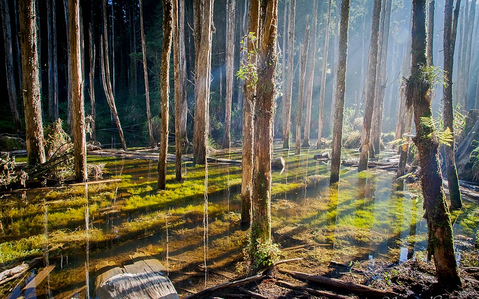
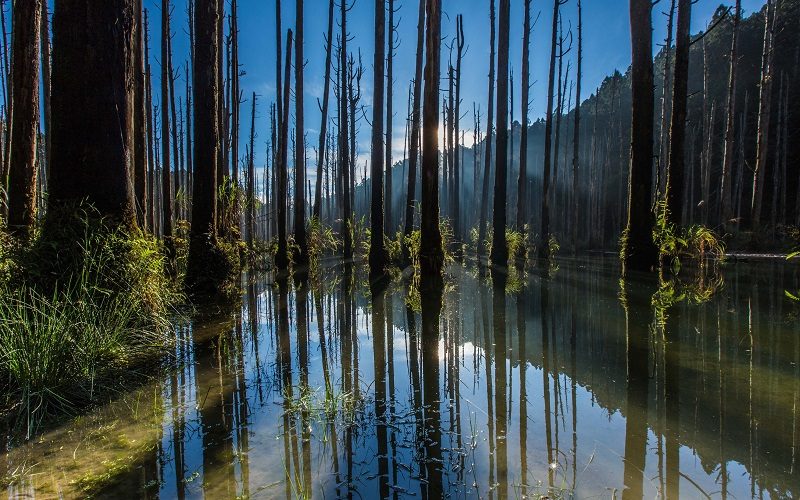
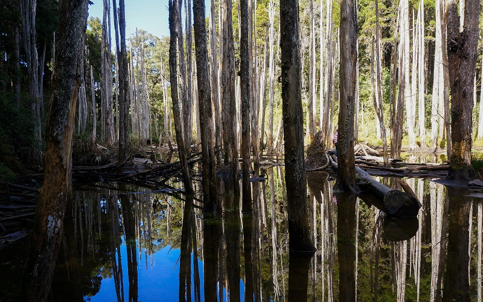
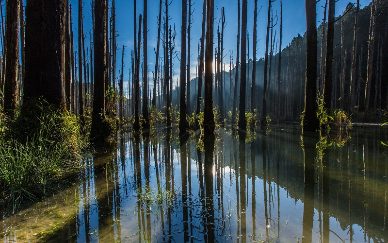
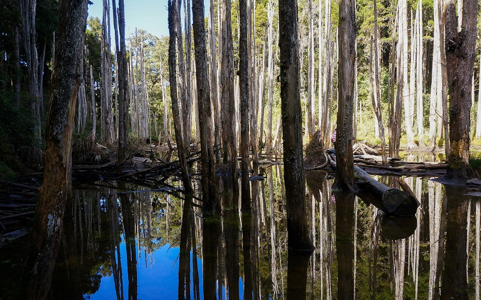

Lotus Forest
Nantou County
Lotus Forest

 



ASanyi Township is a rural township in southern Miaoli County, Taiwan.
It is famous for its mudiao (woodcarving) industry earning it the name the Woodcarving Kingdom of Taiwan.
Longteng bridge is a famous spot in Sanyi, it was built in 1906 during Japanese rule, and was named Gyotōhei kyō.
In April and May forests around the country turn white thanks to the Tung Blossoms that line mountains and hillsides.
People here in Taiwan often refer to the blossoms as "April Snow" or "May Snow"
- Best seasons: summer
- Transportation: TRA Miaoli station → Hsinchu Bus (bond for Sanyi) to Sanyi stop.